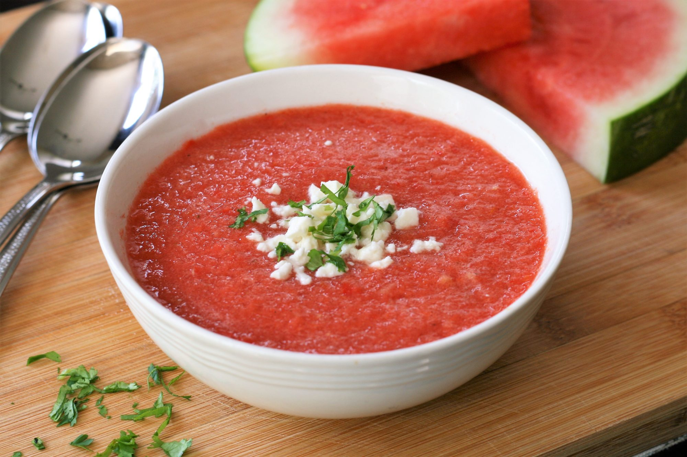

Summer Watermelon Gazpacho

Description
This twist on classic gazpacho will be a welcome, refreshing sight on those hot summer days!
Ingredients
- 4 cups cubed seeded watermelon
- 2 roma (plum) tomatoes, seeded and chopped
Steps
- Combine watermelon, tomatoes, red pepper, cucumber, shallot, lime juice, vinegar, salt, and pepper in a high-powered blender. Blend until smooth, 20 to 30 seconds. Refrigerate for at least 1 hour to allow flavors to meld and soup to chill.
- Stir gazpacho before serving, as it has a tendency to separate, and divide between 4 bowls. Top with feta cheese and cilantro.